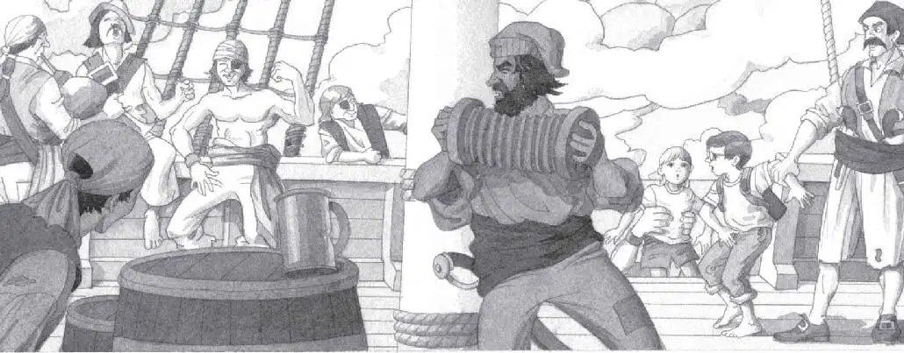
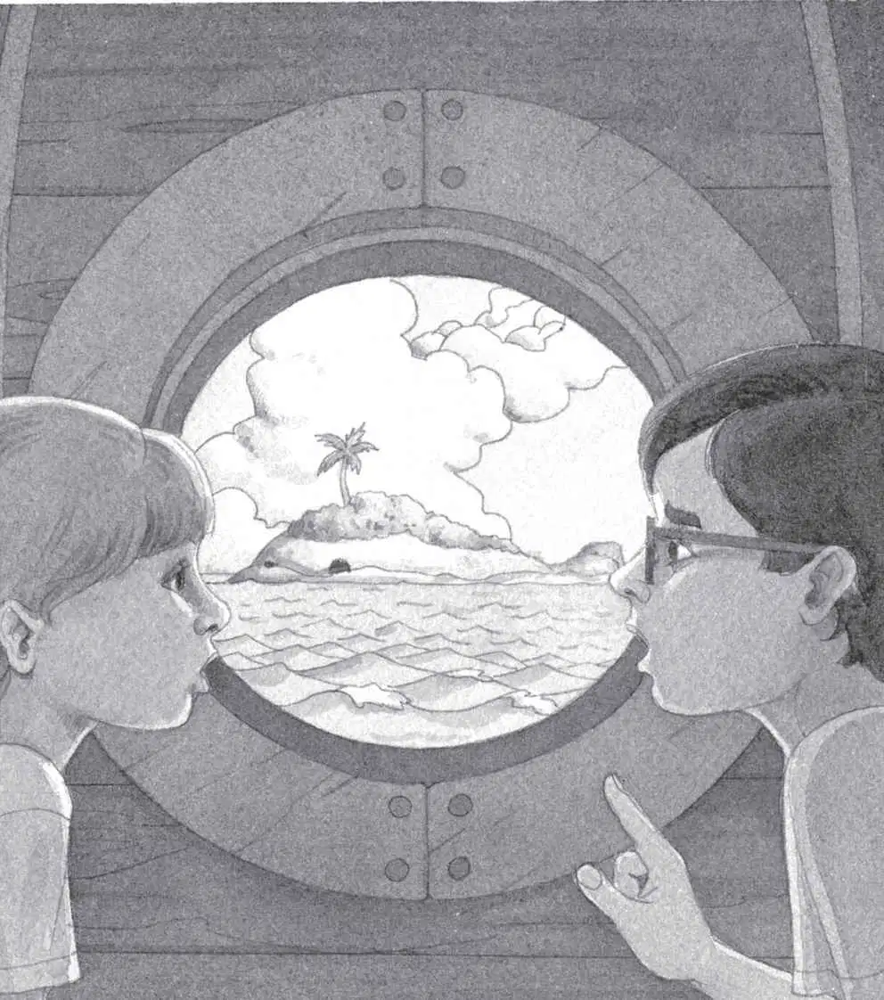

The rowboat tossed from side to side. The waves were huge. Salty spray stung Jack’s eyes. He felt seasick.
“Hold ’er steady!” shouted Cap’n Bones.
He pointed at the sea. “Or we’ll be meat for those evil brutes!”
Dark fins cut through the water. Sharks. One zoomed right by the boat. Jack could have reached out and touched it.
He shuddered.
Soon the rowboat pulled alongside the ship.
The air was filled with wild fiddle music and bagpipes playing. And Jack heard jeers, shouts, and ugly laughter.
“Hoist ’em aboard!” Cap’n Bones shouted to his men.
Annie and Jack were hauled onto the deck.
The ship creaked and moaned. It rolled from side to side. Ropes flapped and snapped in the wild wind.
Everywhere they looked, Jack and Annie saw pirates.
Some were dancing. Some were drinking. Many were fighting. With swords. Or with their fists.

“Lock ’em in my cabin!” Cap’n Bones ordered.
A couple of pirates grabbed Jack and Annie. And threw them in the ship’s cabin. Then locked the door.
The air inside the cabin was damp and sour-smelling. A shaft of gray light came through a small round window.
“Oh man,” said Jack. “We’ve got to figure out how to get back to the island.”
“So we can get into the tree house and go home,” said Annie.
“Right.” Jack suddenly felt tired. How would they ever get out of this mess?
“We better examine the book,” he said.
He reached into his pack and pulled out the pirate book.
He flipped through the pages.
He looked for information to help them.
“Look,” he said.
He found a picture of pirates burying a treasure chest. “This might help.”
Together they read the words under the picture.
Captain Kidd was a famous pirate. It is said that he buried a treasure chest on a deserted island. The chest was filled with gold and jewels.
“Captain Kidd!” said Jack.
“So that’s the kid that Bones keeps talking about,” said Annie.
“Right,” said Jack.
Annie looked out the round window.
“And Captain Kidd’s treasure is buried somewhere on the island,” she said.
Jack took out his notebook and pencil. He wrote:
“Ja-ack,” Annie said.
“Shhh, wait a minute,” he said. “I’m thinking.”
“Guess what I see?” said Annie.
“What?” Jack asked. He looked back at the book.
“A whale.”
“Neat,” he said. Then he looked up. “A whale? Did you say…a whale?”
“A whale. A huge whale. As big as a football field.”
Jack jumped up and looked out the window with her.
“Where?” Jack asked. All he could see was the island. And stormy waves. And shark fins.
“There!” said Annie.
“Where? Where?”
“There! The island is shaped like a giant whale!”
“Oh man,” whispered Jack. Now he could see it.
“See the whale’s back?” said Annie.
“Yep.” The slope of the island looked like the back of a whale.
“See his spout?” said Annie.
“Yep.” The palm tree that held the tree house looked like the spout of the whale.
“See his eye?” said Annie.
“Yep.” A big black rock looked like the eye of the whale.
“The gold doth lie beneath the whale’s eye,” whispered Jack. “Wow.”
